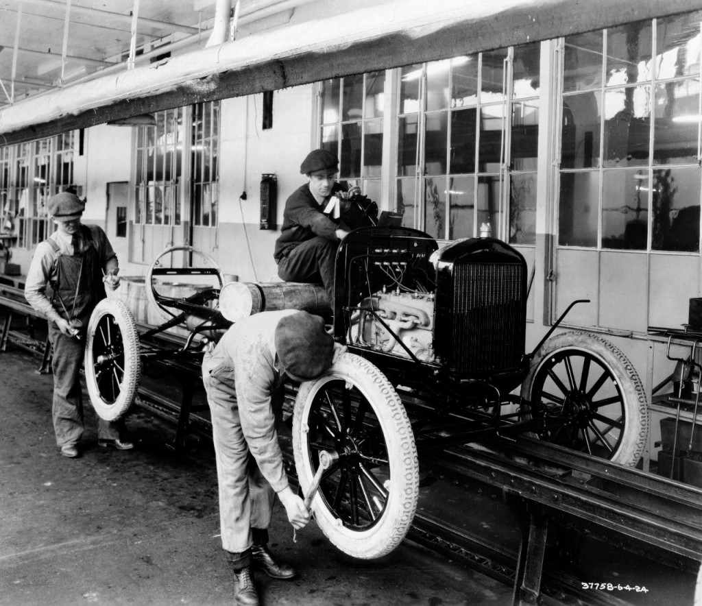
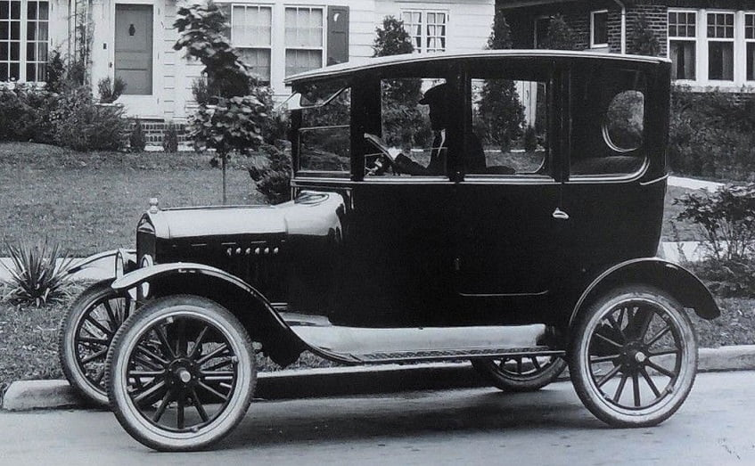
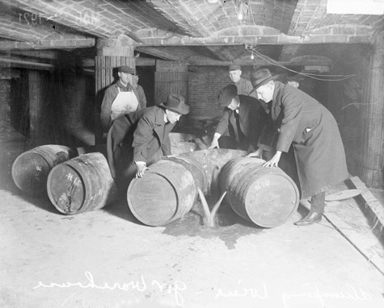
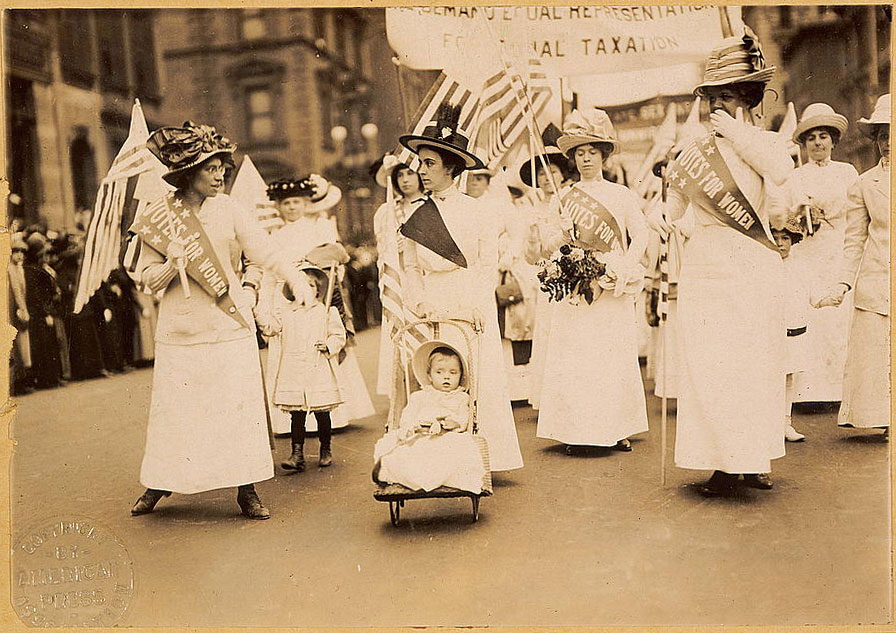
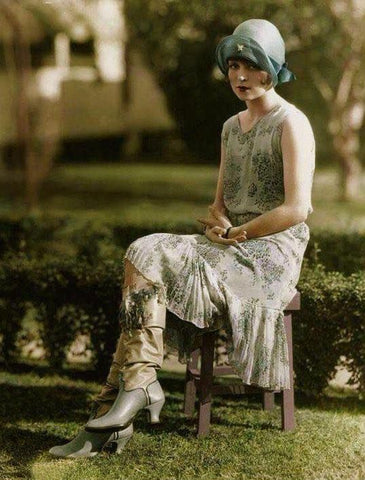
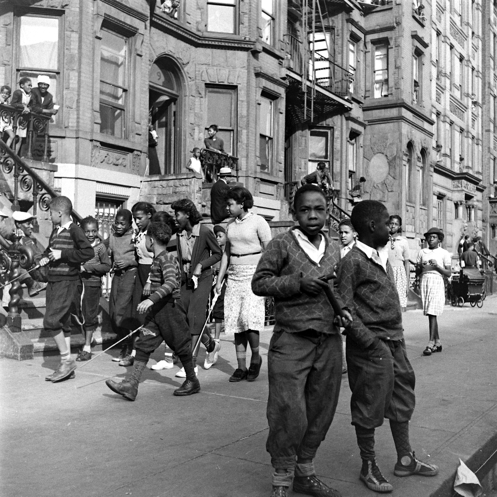
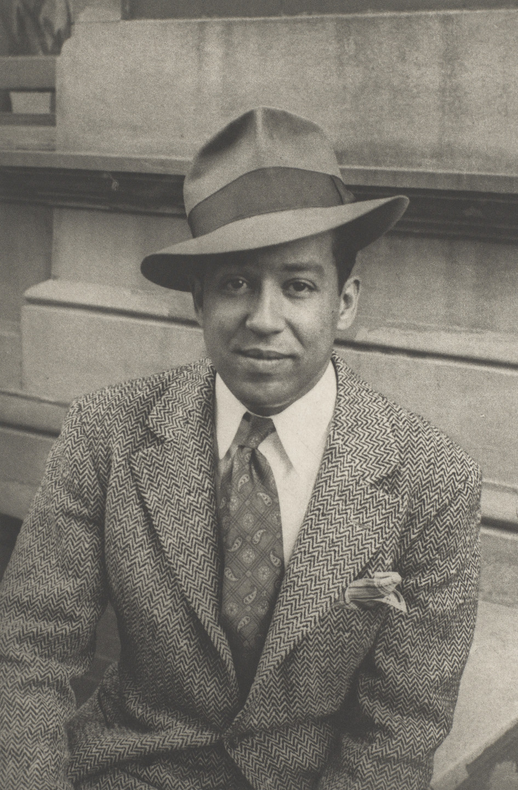
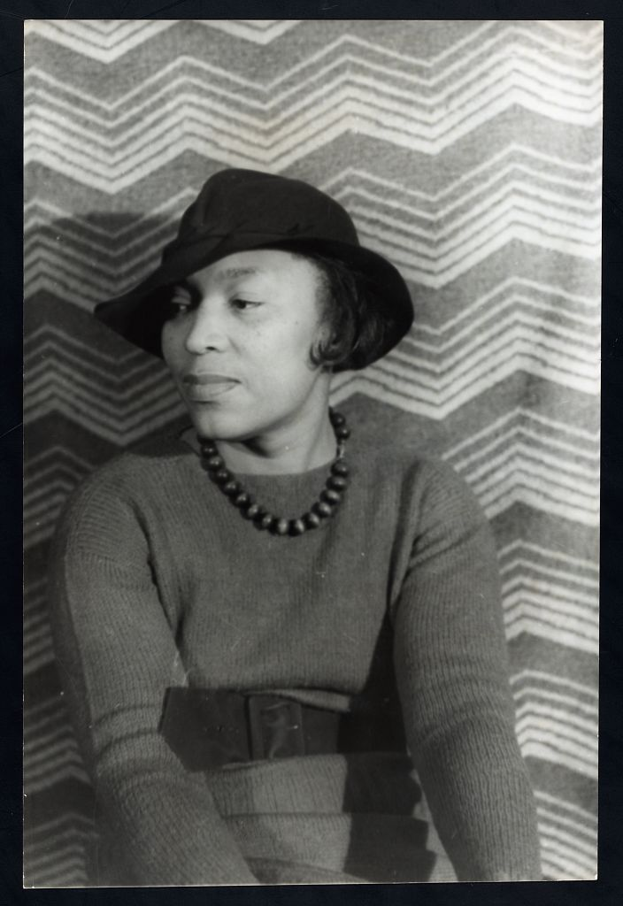

How did prosperity, technology, and cultural explosion make the 1920s one of the most contradictory decades in American history?
✦
New York City, 1925. Langston Hughes is 23 years old and living in Harlem. He works as a busboy at the Wardman Park Hotel in Washington. One night he sees the poet Vachel Lindsay eating dinner. Hughes puts three of his poems next to Lindsay's plate and walks away. The next morning Lindsay reads them to an audience and calls Hughes a genius. Nobody gave Hughes permission to be great. He just was.
The 1920s were a decade of wild contradictions. The economy boomed. Cars became affordable. Women won the right to vote. Black artists created one of the most important cultural movements in American history. And at the same time, the government banned alcohol, nativist movements tried to lock out immigrants, and racial violence surged across the country. The decade was both the best and worst of what America could be — often at the exact same moment.
❧
Chapter 1 — Boom Times: The Economy Explodes

Ford Model T assembly line, Highland Park, Michigan, 1913. Ford's moving assembly line cut the time to build a car from 12 hours to 93 minutes. | Library of Congress
The 1920s economy grew faster than almost any decade before it. The key was mass productionA manufacturing method that uses machines and assembly lines to make large numbers of identical products quickly and cheaply.. Henry Ford's automobile factory in Michigan showed the country what was possible. Ford used a moving assembly line to build his Model T. Instead of one worker building a whole car, each worker did one small repeated task as the car moved past them on a conveyor belt. The time it took to build a car dropped from 12 hours to 93 minutes. The price dropped too, and suddenly ordinary workers could afford to buy what they made.
By 1927, one in five Americans owned a car. That number seems ordinary today; in 1910, almost nobody owned one. Cars changed everything: where people lived, where they shopped, how far they traveled for work. Suburbs grew around cities because people could now commute. Roads were paved. Gas stations appeared on every highway. A whole new economy grew up around the automobile.
Electricity spread through American homes at the same time. By 1929, two thirds of American homes had electric power. Electric appliances followed: refrigerators replaced ice boxes, washing machines replaced washboards, and vacuum cleaners replaced carpet beaters. Advertising grew into a massive industry telling Americans what they needed to buy next. This culture of buying and spending had a name: consumerismAn economic and cultural system where people are encouraged to buy goods and services in large quantities as a way of life.. It was new, it was powerful, and it was built on credit; many Americans were buying things they could not yet afford, paying on installment plans that left them dangerously in debt.
Not everyone shared in the boom. Farmers had been struggling since the end of World War I, when European demand for American food dropped sharply. Black Americans in the South were largely locked out of the new prosperity by segregation and violence. The gap between the very wealthy and everyone else was growing even as the overall economy surged. The prosperity of the 1920s had a narrow floor; it held up the wealthy and much of the white middle class, while leaving others to fall through.

A Ford Model T, c. 1919. Ford's affordable car transformed American life: where people lived, how far they traveled, and what they expected from the economy. | Wikimedia Commons
✦
Chapter 2 — Prohibition: The Law Nobody Followed

Federal agents destroying barrels of illegal beer during Prohibition, c. 1920. The 18th Amendment banned the manufacture and sale of alcohol in the United States starting January 1920. | Library of Congress
On January 17, 1920, the United States made it illegal to manufacture, sell, or transport alcohol anywhere in the country. The 18th Amendment to the Constitution had been ratified the year before. The movement behind it had been building for decades, pushed by religious groups and social reformers who argued that alcohol destroyed families and communities. They called their campaign ProhibitionThe period from 1920 to 1933 when the 18th Amendment made it illegal to make, sell, or transport alcohol anywhere in the United States.. When it finally became law, they celebrated.
The celebration did not last long. Within months it was clear that millions of Americans had no intention of obeying the law. Illegal bars called speakeasies opened in basements, back rooms, and abandoned warehouses across the country. By 1925, there were an estimated 30,000 speakeasies in New York City alone. People who had never broken a law in their lives were buying illegal drinks and tipping their bartenders the same as always.
The real winners were organized crime networks. Bootleggers made fortunes supplying illegal alcohol to a country that refused to go dry. Al Capone ran a criminal empire in Chicago that earned an estimated $60 million a year from illegal alcohol sales. Criminal gangs fought each other for control of the bootlegging business. Violence exploded in cities across the country. The government had created the most profitable illegal market in American history.
Prohibition was repealed in 1933 with the 21st Amendment, making it the only constitutional amendment ever reversed. But it left a lasting legacy: it proved that trying to outlaw something widely desired often creates more problems than it solves; and it built the organized crime infrastructure that would shape American cities for the rest of the 20th century.
"I am like any other man. All I do is supply a demand."
— Al Capone, bootlegger and organized crime boss, Chicago, c. 1929
Capone made this remark to justify his illegal alcohol empire; his argument that he was simply meeting a demand the government had wrongly banned captures exactly why Prohibition failed to stop drinking while succeeding only in creating violent criminal organizations.
❧
Chapter 3 — Women Win the Vote and Rewrite the Rules

Women's suffrage parade, New York City, 1912. After decades of organizing, marching, and going to prison, American women won the right to vote with the 19th Amendment in 1920. | Library of Congress
On August 18, 1920, the Nineteenth AmendmentThe 1920 amendment to the U.S. Constitution that gave women the right to vote in all elections nationwide. was ratified, giving women the right to vote in every election in the United States. Women had been organizing and fighting for this right since 1848, more than 70 years. Suffragists had marched, gone on hunger strikes, been arrested and force-fed in jail, and been ridiculed in newspapers for their entire adult lives. The amendment passed by a single vote in the Tennessee state legislature, the last state needed for ratification.
The vote was just one part of a broader transformation in women's lives during the 1920s. The iconic image of the decade was the flapper: a young woman who wore short skirts, cut her hair, drove cars, danced in public, and ignored the rules that had confined her mother's generation. Flappers represented something genuinely new: a generation of women who expected freedom as a right, not a gift.
More women entered the workforce than ever before. They worked as secretaries, teachers, nurses, and factory workers. A small but growing number entered medicine, law, and journalism. Eleanor Roosevelt, who would become First Lady in 1933, was already building a public career as a political organizer in the 1920s. Women's colleges produced a generation of graduates who expected to use their educations. The idea that a woman's only place was in the home was cracking apart, even if it would not fully break for decades more.
The right to vote did not reach all women equally. Black women in the South were blocked from voting by the same poll taxes, literacy tests, and violence that kept Black men away from the polls. The 19th Amendment was a landmark; it was also incomplete. The full story of women's voting rights in America did not end in 1920. It continued through the Civil Rights Act of 1965 and beyond.

Young women in 1920s flapper fashion. The flapper represented a generation that expected freedom as a right, not a privilege. | Wikimedia CommonsThe original 19th Amendment to the U.S. Constitution, ratified August 18, 1920. It was the result of more than 70 years of organizing by American women. | National Archives / Wikimedia Commons
✦
Chapter 4 — The Harlem Renaissance: A Culture Transforms a Nation

Harlem, New York City, c. 1930. By the 1920s, Harlem had become the cultural capital of Black America, drawing artists, writers, musicians, and activists from across the country. | Library of Congress
Harlem is a neighborhood in northern Manhattan, New York City. In the 1920s, it became something much larger than a neighborhood. It became the center of the Harlem RenaissanceA cultural movement in the 1920s and 1930s centered in Harlem, New York, where Black writers, musicians, and artists created work that transformed American culture and challenged racism.: an explosion of Black artistic, literary, and intellectual life that produced some of the most important work in American history. Writers, musicians, painters, and thinkers gathered in Harlem from across the country and the world, drawn by the energy of a community that was creating something entirely new.
The Harlem Renaissance grew directly out of the Great Migration. Hundreds of thousands of Black Americans had moved north during and after World War I, escaping sharecropping, Jim Crow laws, and racial violence in the South. Many settled in Harlem. They brought with them their music, their stories, their grief, and their genius. They found in Harlem a community that encouraged all of it.
The music of the Harlem Renaissance was jazz: improvised, complex, joyful, and mournful at the same time. Duke Ellington led his orchestra at the Cotton Club. Louis Armstrong transformed what a trumpet could do. Bessie Smith sang the blues with a power that made audiences weep. Jazz spread out of Harlem into every American city and eventually across the world. It became the first truly American art form to reshape global culture.
The literature was equally powerful. Langston Hughes wrote poetry that used the rhythms of jazz and blues to tell the truth about Black American life with honesty and beauty. Zora Neale Hurston collected and celebrated the folklore and vernacular speech of Black communities in the South, arguing that Black culture was not a lesser version of white culture; it was its own complete world. Both faced critics who thought they were too honest, too unpolished, or not proper enough. Both were right, and the critics were wrong.
Langston Hughes
Poet & Writer
Hughes used the rhythms of jazz and blues in his poetry to capture the joy, pain, and dignity of Black American life. His 1926 essay "The Negro Artist and the Racial Mountain" argued that Black artists owed nothing to white approval.
Zora Neale Hurston
Novelist & Folklorist
Hurston traveled the South collecting the stories, songs, and language of Black communities. Her 1937 novel Their Eyes Were Watching God is considered one of the greatest American novels ever written.
Duke Ellington
Composer & Bandleader
Ellington led his orchestra at Harlem's Cotton Club and composed over 1,000 pieces of music. He turned jazz into a sophisticated art form that blended African American musical traditions with European classical structure.
Marcus Garvey
Activist & Leader
Garvey led the Universal Negro Improvement Association, which attracted millions of followers with its message of Black pride, economic self-sufficiency, and Pan-African unity. His movement was the largest Black mass movement in American history to that point.

Langston Hughes, photographed by Carl Van Vechten, 1936. Hughes became the voice of the Harlem Renaissance and one of the most influential American poets of the 20th century. | Library of Congress

Zora Neale Hurston, photographed by Carl Van Vechten, 1938. Hurston's work was largely forgotten after her death in 1960; novelist Alice Walker rediscovered her in the 1970s. | Library of Congress
"I, too, sing America. I am the darker brother. They send me to eat in the kitchen when company comes, but I laugh, and eat well, and grow strong. Tomorrow, I'll be at the table when company comes. Nobody'll dare say to me, 'Eat in the kitchen,' then. Besides, they'll see how beautiful I am and be ashamed. I, too, am America."
— Langston Hughes, "I, Too," 1926
Hughes wrote this poem to answer Walt Whitman's famous line "I sing America" — Hughes is saying that Black Americans are part of America too, and that a day is coming when that will be undeniable; he wrote it during a decade when racial violence and segregation were at their peak.
Question 1: Hughes uses the image of being sent to eat in the kitchen. What does that represent in plain language? What is he really describing about life in America in the 1920s?
Question 2: The Essential Question asks how the 1920s could be both prosperous and deeply contradictory. How does this poem show that contradiction? Who was the prosperity for, and who was left out?
How This Still Matters Today
The Harlem Renaissance created the cultural DNA of modern American music, literature, and identity; its artists are still being rediscovered, sampled, and argued over right now.
The Apollo Theater on 125th Street, Harlem, New York City. Every major Black American musical artist of the 20th century performed on this stage; the theater opened in 1934 and is still running today. | Wikimedia Commons
Langston Hughes said "I, too, am America." Seventy years after he wrote that, how do you know whether a country has actually listened?